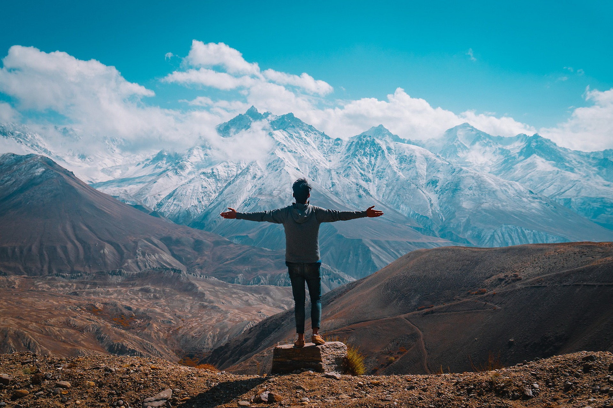

Путишествие
Одиночный горный поход как путь к себе. Натуралистичная драма с Риз Уизерспун по автобиографии Шерил Стрэйд.

В центре сюжета Шерил Стрэйд, раздавленная неудавшимся браком и смертью матери и потерявшая всякую надежду на счастье женщина, отправляется в пешее странствие по территории Pacific Crest Trail — маршруту по наиболее высоким участкам хребта Сьерра-Невада и Каскадных гор.
Потеряв всякую надежду на счастье из-за развалившегося брака и смерти матери, Шерил Стрейд отправляется в пешее странствие по наиболее высоким участкам хребта Сьерра-Невада и Каскадных гор. Испытания, выпавшие на долю женщины в этом опасном одиночном путешествии, исцелят ее от душевных страданий, но процесс будет отнюдь не безболезненным.
- Фильм снят по мотивам романа американской писательницы Шерил Стрэйд «Дикая. Опасное путешествие как способ обрести себя».
- Молодую Шерил сыграла реальная дочь Шерил Стрэйд.
- Ради роли в этом фильме Риз Уизерспун отказалась от роли в фильме «Большие глаза» (2014).
- Рюкзак, который носит Шерил в фильме, был действительно тяжелым, чтобы походные сцены выглядели более реалистичными.